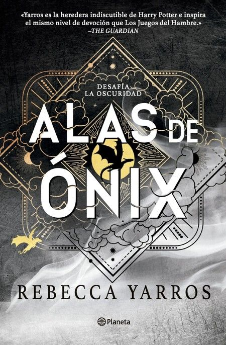

Tras casi dieciocho meses en el brutal Colegio de Guerra Basgiath, Violet Sorrengail se enfrenta a desafíos que van mucho más allá del entrenamiento. La guerra ha comenzado, los enemigos se acercan a las murallas y hay traidores incluso dentro de sus propios aliados. Violet debe salir fuera de Aretia en busca de aliados en tierras desconocidas, poner a prueba su ingenio y fuerza para proteger a quienes ama (sus dragones, su familia, su hogar y a él). Mientras guarda un secreto peligroso que podría destruirlo todo, una poderosa tormenta se aproxima… y no todos sobrevivirán a su furia.
Género: Fantasía romántica / ficción fantástica
Año: 2025
Páginas:896
Volver